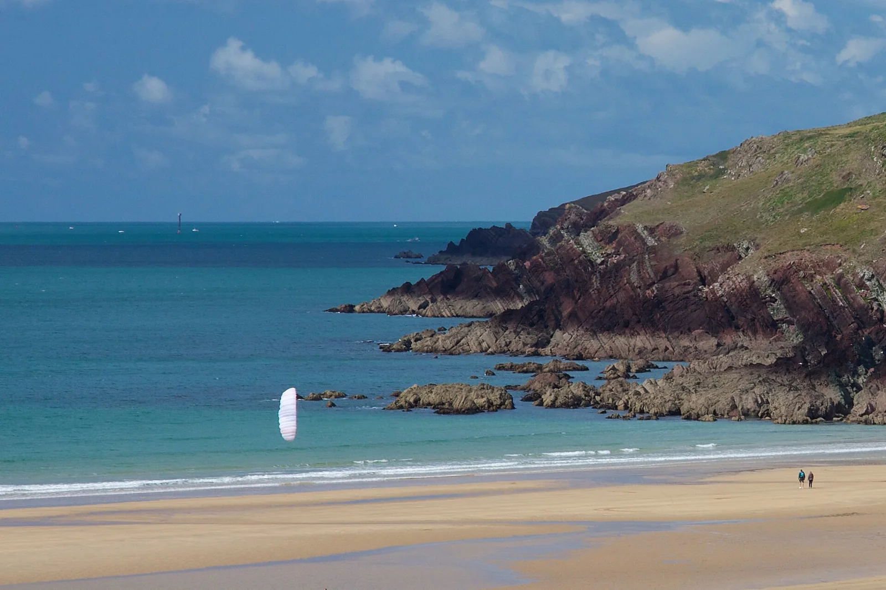

Freshwater West
Pembrokeshire, Pays de Galles, Royaume-Uni · surf, bodyboard

Grande plage sauvage du parc national de la côte du Pembrokeshire, bordée de dunes. C’est l’un des meilleurs spots de surf du pays de Galles, réputé pour la puissance de ses vagues et de ses courants.
- Lieu
- Pembrokeshire, Pays de Galles, Royaume-Uni
- Niveau
- Intermédiaire
- Activités
- surf, bodyboard
- Type d'eau
- Mer / océan
- Coordonnées
- 51.66, -5.06 (position approximative du secteur)
Dangers à connaître
- Courants forts et courants d’arrachement : baignade dangereuse.
- Champ de tir militaire de Castlemartin tout proche : respecte les zones et panneaux.
Le conseil d'Ocean Buddy
Viens avec quelqu’un et évite de te baigner quand la houle est là : la plage est plus faite pour le surf que pour la baignade.
Ouvrir dans Ocean Buddy Télécharger sur l'App Store
Source : Fiche Ocean Buddy · septembre 2026 · à vérifier localement.